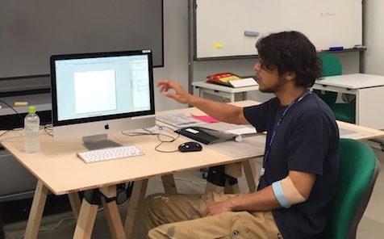

fabble
5/11.16 固定・把握チーム
自分の役割⇨写真記録実際に体験中のワークショップの様子を写真に収め、それを元に改善点を探した。
使用した工具
大型バイス ultra・バイスプライヤー ultra
・G型クランプ
・テーブルバイス
・ヤンキーバイス
・Eリングプライヤー
・モンキーレンチ
・ネジザウルス
個人の改善点
１箇所からしか写真を撮っていなかった為に反対側では何が起こっているのかが見えにくかった。次回は様々な角度から写真を撮って、あとで確認をしやすいようにしたい。
6/14.15.20 デジタルファブリケーション（加工工程実践）
GRAPHTEC カッティングプロッターCE-6000-60ステッカー作成
作業工程
データの作成
「Adobe illustrator CC」を使ってステッカーにしたいイラストを描き、データ化する。※テキストはアウトライン化しておき、重なっている部分は「シェイプ選択ツール」で選択し 繋げたほうが綺麗に仕上がる。
↓
ファイル→別名で保存→形式を.epsにして保存機材準備
カッティングプロッターの刃先を出しすぎに注意してシートに当てる。↓
電源を入れ、シートを本体後ろからセットして、テストカットをする。↓
テストカットが完了したら、新しいスタート位置を設定してデータの書き出しを行う。データの出力
「cuttingMaster3」で機械にデータを送信してENTERを押す。仕上げ
カッターで丁寧にいらない部分を取り除き、リタックを貼り付けて完成。作成したステッカー

個人の改善点
データを作る際に重なっている部分を「シェイプ選択ツール」で選択せずにそのままにしていたので、出来上がったステッカーがうまく結合されずにバラバラになってしまった。
細かすぎる場所は潰れてしまうことがあるとわかったので、次に使う際はメリハリをつけたデザインにしたい。
return